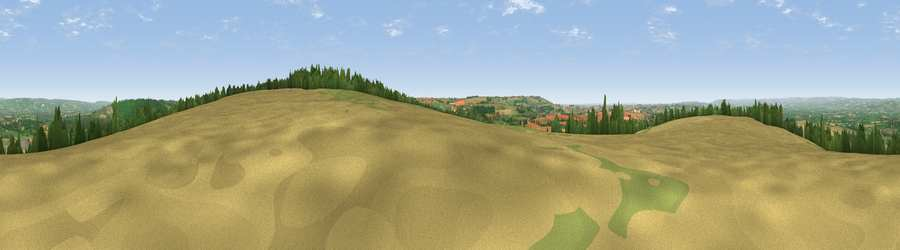

Viewpoint near Thorpe Bassett
#6388 in England · top 8% of its area beats it · near Thorpe BassettThe view, rendered

A 360° render of this exact spot computed from the terrain model, tree cover and land cover — summer colours, afternoon light, calibrated against photographs of famous viewpoints. Real trees, hedges and buildings will differ in detail.
The panorama
Grey silhouette: terrain skyline in each direction (720 bearings, Earth curvature and refraction included). Dashed green: skyline with trees (+15 m) and buildings (+8 m) as obstacles. Blue strip: how far the ground is visible on each bearing.
Where the view opens
Wedge length = distance to the farthest visible ground on that bearing (vegetation-aware). Rings at 10, 25 and 50 km.
What fills the view
58% cropland · 26% grassland · 14% woodland · 2% built-up
Angular shares of the visible panorama (visual magnitude), not map area. Landscape diversity 0.44 (0–1 Shannon).
Key numbers
More beautiful places nearby
The staircase of upgrades: each row has a higher view potential than everything closer. Driving times are estimates from straight-line distance, calibrated against real road routing — check an actual route before setting out.
| Place | Direction | Drive | Score |
|---|---|---|---|
| Viewpoint near Settrington | WNW · 1 km | ~3 min | 72.3 |
| Viewpoint near Leavening | SW · 11 km | ~21 min | 73.7 |
| Viewpoint near Acklam | SSW · 12 km | ~22 min | 73.8 |
| Seamer Beacon | NE · 22 km | ~37 min | 76.9 |
| Olivers Mount | NE · 24 km | ~39 min | 80.3 |
| Viewpoint near Ravenscar | NNE · 32 km | ~50 min | 87.3 |
| Viewpoint near Ravenscar | NNE · 33 km | ~51 min | 90.0 |
| Viewpoint near Easington | NNW · 50 km | ~71 min | 90.2 |
54.12770, -0.68816 · source: screening · position refined by local search. Computed location — check access rights before visiting.